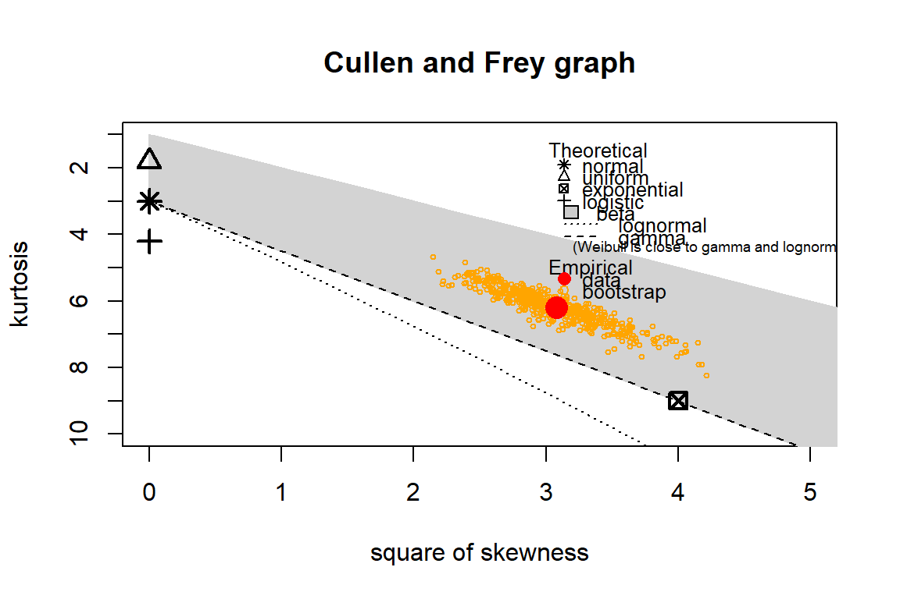
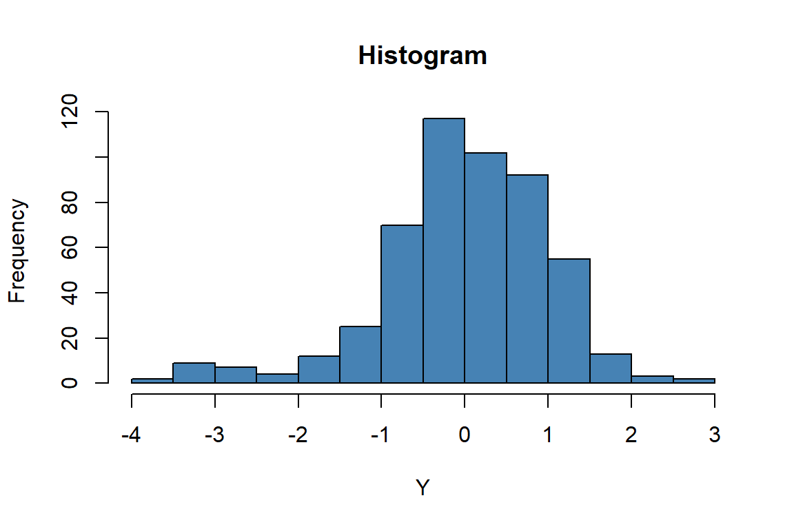
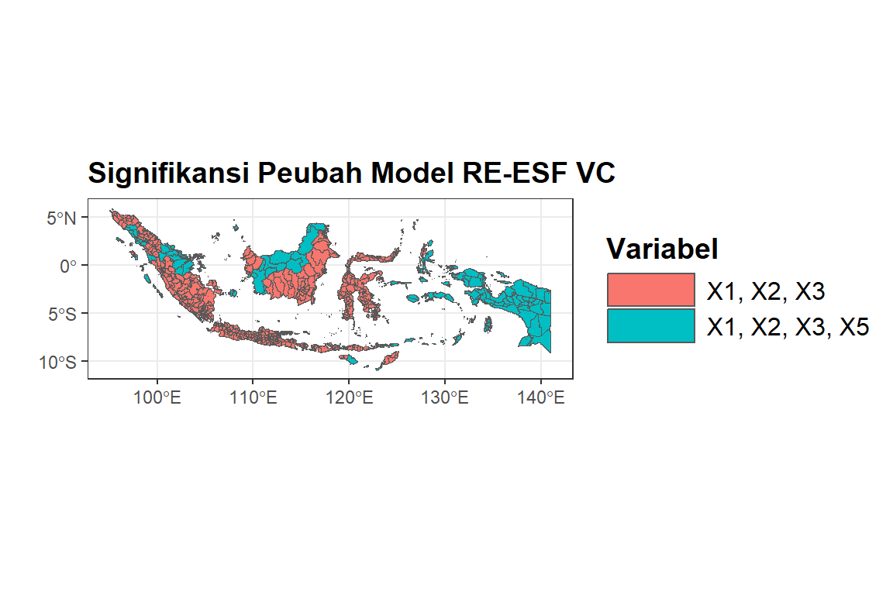
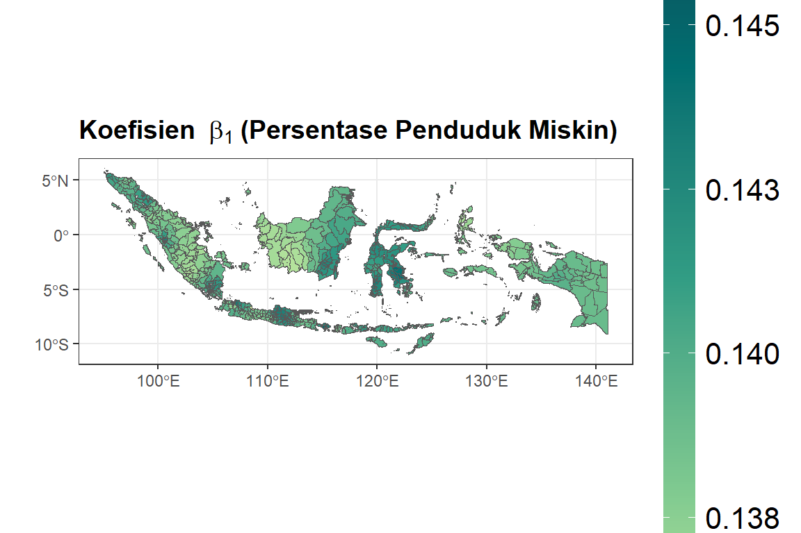
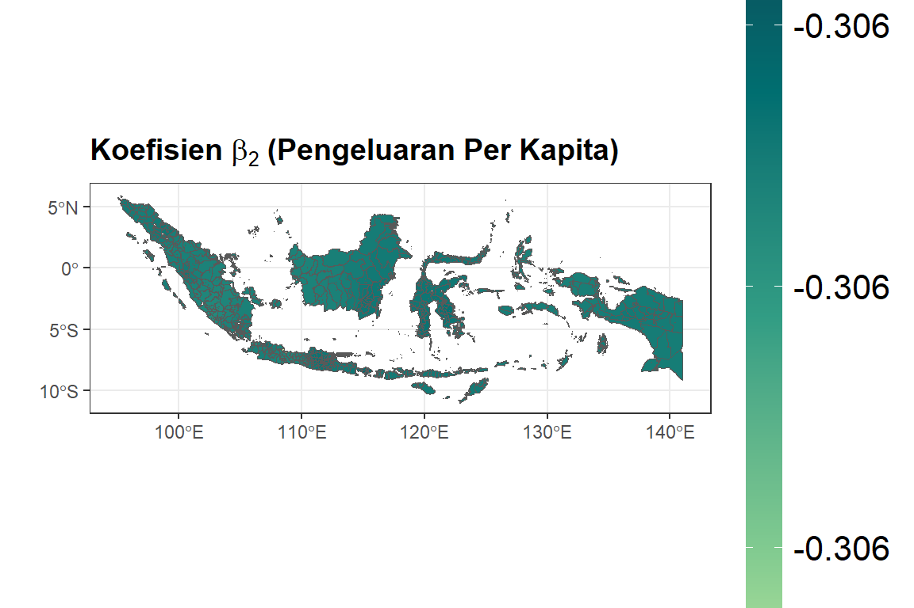
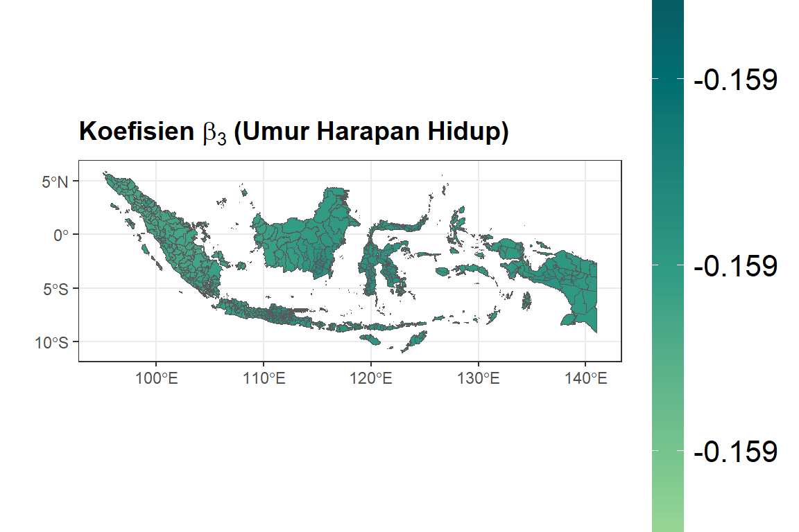
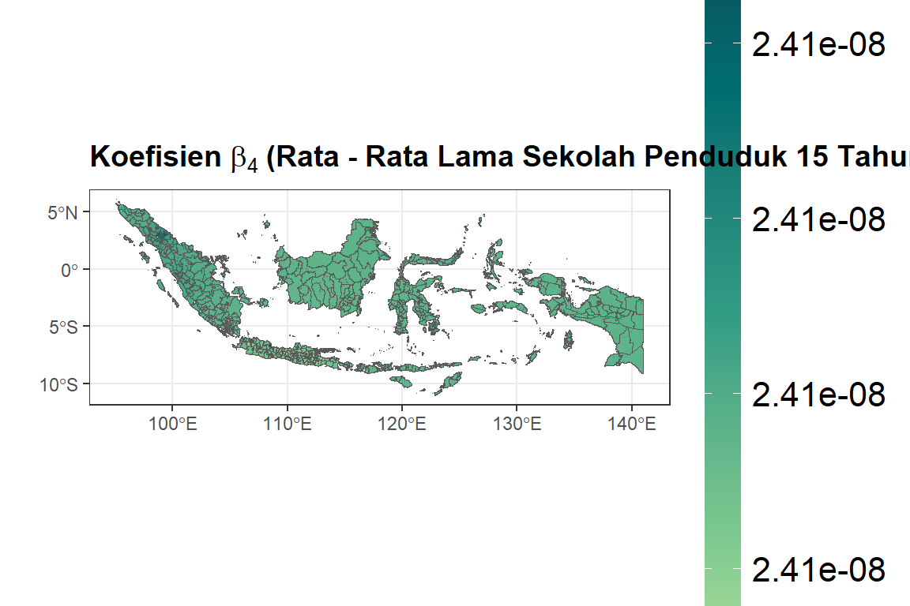
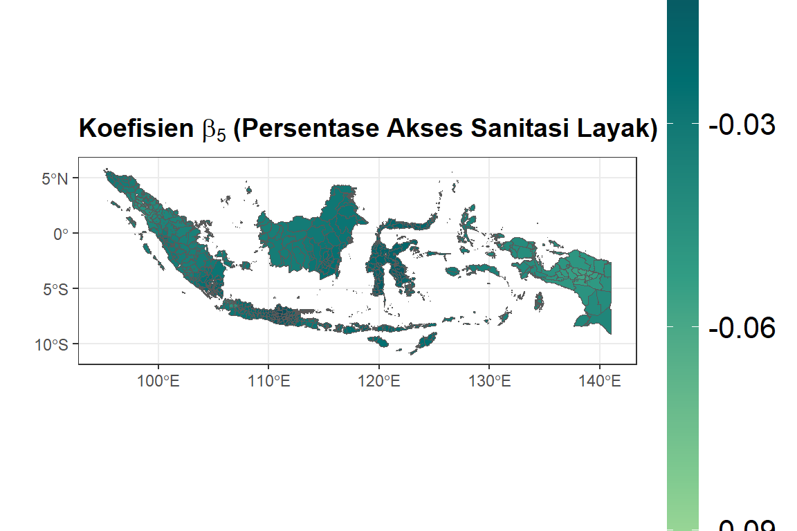

library(spdep) # Untuk pemodelan dependensi spasial
library(spatialreg) # Untuk pemodelan dependensi spasial
library(stats) # Untuk operasi matematis
library(car) # Untuk menghitung VIF
library(nortest) # Untuk uji kenormalan
library(sf) # Untuk menginput peta
library(ggplot2) # Untuk visualisasi data
library(tidyr) # Untuk mengolah dataframe
library(dplyr) # Untuk mengolah dataframe
library(tidyverse) # Struktur matriks
library(lmtest) # Uji model linier
library(spmoran) # ESF
library(ape)
library(fitdistrplus)
library(readxl) 11 Model Keragaman Spasial
11.1 Deskripsi
11.1.1 Regresi Terboboti Geografis
Regresi Terboboti Geografis (RTG) merupakan pengembangan dari kerangka model regresi klasik yang menghasilkan penduga koefisien regresi yang bervariasi untuk setiap lokasi. Semakin jauh suatu lokasi dari lokasi yang diduga model regresinya, semakin rendah bobot untuk data pada lokasi tersebut (Djuraidah 2020). Model RTG dituliskan sebagai berikut (Huang, Wu, and Barry 2010):
\[ y_i = \beta_0 (u_i v_i) + \sum_{k=1}^{p} \beta_k (u_i v_i) x_{ik} + \epsilon_i \tag{11.1}\]
dimana:
\[\begin{align*} y_i &: \text{nilai pengamatan peubah respon untuk lokasi ke-i} \\ (u_i v_i) &: \text{identifikasi lokasi dari titik ke-i pada suatu lokasi geografis} \\ \beta_0 (u_i v_i) &: \text{intersep pada lokasi pengamatan ke-i} \\ \beta_k (u_i v_i) &: \text{koefisien regresi peubah penjelas ke-k pada lokasi ke-i} \\ x_{ik} &: \text{nilai pengamatan peubah penjelas ke-k pada lokasi ke-i} \\ \epsilon_i &: \text{nilai galat regresi antara peubah penjelas dengan peubah respon di lokasi ke-i} \end{align*}\]
Djuraidah (2020) menyatakan parameter koefisien regresi \(\beta_k (u_i v_i)\) diduga dengan menggunakan metode Kuadrat Terkecil Terboboti, sehingga pendugaan koefisien regresi \(\hat{\beta}(u_i v_i)\) dituliskan sebagai berikut:
\[ \hat{\beta}(u_i v_i) = [X'W(u_i v_i)X]^{-1} X' W(u_i v_i) y \tag{11.2}\]
dimana \(W(u_i v_i)\) adalah matriks \(n \times n\) yang merupakan matriks pembobot spasial lokasi ke-\(i\) dengan nilai unsur-unsur diagonalnya ditentukan oleh jarak antar lokasi pengamatan ke-\(i\) dengan lokasi lainnya.
11.1.2 Moran Eigenvectors
Vektor eigen moral (MEs) \(\{e_1,…,e_L\}\) adalah vektor eigen yang diekstraksi dari dua kali lipat matriks kedekatan spasial terpusat di mana \(e_1\) adalah ME yang sesuai dengan nilai eigen terbesar \(\lambda_1\), \(e_2\) adalah ME yang sesuai dengan nilai eigen terbesar kedua \(\lambda_2\), dan seterusnya. MEs dapat diinterpretasikan dalam bentuk koefisien moran (MC; atau Moran I), yang merupakan statistik diagnostik ketergantungan spasial yang menunjukkan nilai positif yang lebih besar dengan adanya ketergantungan spasial positif yang lebih kuat.
Moran Coefficienct (MC) mengkuantifikasi ketergantungan spasial dalam \(y\), yaitu \(n \times 1\) vektor variabel respon menggunakan persamaan berikut:
\[ MC[y] = \frac{n}{1' C1} \frac{(y' MCMy)}{(y' My)} \tag{11.3}\]
Di mana “\('\)” menunjukan matrix transpose, 1 adalah \(n \times 1\) vektor satuan. \(M = I-11'/n\) adalah \(n \times n\) matriks pemusatan, di mana \(I\) adalah matriks identitas, dan \(C\) adalah konektivitas simetris \(n \times n\) matriks yang entri diagonalnya 0 (Dray, Legendre, and Peres-Neto 2006).
Akan dilakukan dekomposisi eigen matriks MCM menjadi \(E_{\text{full}} \Lambda_{\text{full}} E_{\text{full}}'\), di mana \(E_{\text{full}}\) adalah \(n \times n\) matriks yang kolom ke-\(l\), sama dengan vektor eigen ke-\(l\). MC ditunjukkan sebagai berikut:
\[ MC[e_l] = \frac{n}{1' C1} \frac{(e_l' MCMe_l)}{(e_l' Me_l)} = \frac{n}{1' C1} \frac{(e_l' E_{\text{full}} \Lambda_{\text{full}} E_{\text{full}}')}{(e_l' e_l)} = \frac{n}{1' C1} \lambda_l \tag{11.4}\]
Persamaan di atas menunjukkan bahwa vektor eigen dapat diinterpretasikan dalam bentuk MC. Secara khusus, vektor eigen ke-1, \(e_1\) adalah himpunan bilangan real yang mempunyai nilai MC terbesar yang dapat dicapai dengan himpunan bilangan real apa pun untuk struktur spasial yang ditentukan oleh \(C\); \(e_2\) adalah himpunan bilangan real yang mempunyai nilai MC terbesar yang dapat dicapai oleh himpunan mana pun yang ortogonal dan tidak berkolerasi dengan \(e_1\), dan seterusnya hingga vektor eigen ke-\(l\). Jadi, \(E_{\text{full}}=\{e_1,…,e_n\}\) menyediakan semua kemungkinan perbedaan deskripsi pola peta ketergantungan spasial laten dengan setiap besaran indeks melalui nilai yang sesuai di \(\{\lambda_1,…,\lambda_n\}\) (Griffith 2003).
11.1.3 Pendekatan Regresi Terboboti Geografis Menggunakan Eigenvector Spatial Filtering (ESF)
Pendekatan RTG dapat ditingkatkan dengan memasukkan penyaringan spasial berbasis eigenvector. Ini melibatkan penggunaan kombinasi linear dari eigenvector untuk menangkap asosiasi spasial lokal dan menjelaskan autokorelasi spasial dalam \(y_i\) (Griffith, 2008). Salah satu pendekatan yang sering digunakan dalam konteks ini adalah Eigenvector Spatial Filtering (ESF), yang juga disebut koordinat utama matriks ketetanggaan (Dray, Legendre, and Peres-Neto 2006).
ESF didasarkan pada koefisien Moran (MC) dan mampu memetakan vektor ciri spasial untuk mengidentifikasi dan mengukur struktur spasial dalam data. Dengan mengintegrasikan konsep ESF ke dalam pendekatan RTG, model tersebut menjadi lebih efektif dalam memahami dan menggambarkan pola hubungan spasial antar peubah yang diamati. Model ESF Varying Coefficient (VC) dikembangkan berdasarkan model GWR dan Fixed Effect ESF:
\[ y_i = (\beta_0 + \sum_{k_0=1}^{K_0} E_{ik_0} \gamma_{k_0}) + \sum_{p=1}^{P} (\beta_p + \sum_{k_p=1}^{K_p} E_{ik_p} \gamma_{k_p}) X_{ip} + \epsilon_i \tag{11.5}\]
yang juga dapat ditulis sebagai:
\[ y = \sum_{p=1}^{P} x_p \odot \beta_p^{ESF} + \epsilon \tag{11.6}\]
dimana:
\(\beta_p^{ESF} = \beta_p + E_p \gamma_p\) dengan \(\epsilon \sim N(0, \sigma^2 I)\)
11.1.4 Random Effect Eigenvector Spatial Filtering Varying Coefficient (RE-ESF VC)
Model Fixed Effect ESF-VC pada awalnya fokus pada penggunaan eigenvector spatial filtering untuk mengendalikan dan mengeksplorasi efek tetap yang terkait dengan variabilitas spasial dalam data. Namun, perkembangan terbaru telah melihat konsep ini dikembangkan menjadi model Random Effect ESF-VC, di mana pendekatan ini tidak hanya mempertimbangkan efek tetap, tetapi juga mampu menangkap variasi acak yang mungkin ada dalam struktur spasial data tersebut. Model RE ESF-VC menurut (Murakami 2017) sebagai berikut:
\[ y = \sum_{k=1}^{K} x_k \beta_K^{(RE-ESF)} + \epsilon, \quad \epsilon \sim N(0,\sigma^2 I) \tag{11.7}\]
\[ \beta_K^{(RE-ESF)} = \beta_k 1 + E_k \gamma_k, \quad \gamma_k \sim N(0_L,\sigma_{(\gamma,k)}^2 \Lambda_{(\alpha k)}) \]
Di mana \(0_L\) adalah vektor nol berukuran \(L \times 1\), sedangkan \(E\) adalah matriks vektor eigen sepanjang \(L\) yang sesuai dengan eigenvalues positif. Dari persamaan sebelumnya, dibuat model lanjutan seperti berikut:
\[ y = X\beta + \tilde{E} \tilde{\Lambda}(\theta) \tilde{u} + \epsilon, \quad \epsilon \sim N(0,\sigma^2 I) \tag{11.8}\]
\(\tilde{E} = [x_1 \quad E \ldots X_K \quad E]\)
Persamaan di atas menunjukkan bahwa model RE-ESF adalah model dengan efek campuran linier. Selain itu, \(\beta\) dan \(\tilde{u}\) memiliki estimasi linier terbaik tanpa bias sebagai berikut:
\[ \begin{bmatrix} \hat{\beta} \\ \hat{u} \end{bmatrix} = \left[ \begin{array}{cc} X'X & X'\tilde{E}\tilde{\Lambda}(\theta) \\ \tilde{\Lambda}(\theta)(\tilde{E'})X & \tilde{\Lambda}(\theta)(\tilde{E'})\tilde{E}\tilde{\Lambda}(\theta) + I_{KL} \end{array} \right]^{-1} \begin{bmatrix} Xy' \\ \tilde{\Lambda}(\theta) \tilde{E}y' \end{bmatrix} \]
Ketika \(\theta\) diestimasi secara numerik dengan maksimisasi.
11.1.5 Transformasi Box-Cox
Draper & Smith (1992) menyatakan bahwa transformasi Box-Cox adalah transformasi pangkat pada variabel respons yang dikembangkan oleh Box dan Cox. Transformasi ini bertujuan memenuhi ketiga asumsi model linier, yaitu keheterogenan ragam, ketaknormalan galat, dan keaditifan/ketaklinieran pengaruh sistematik. Box-Cox menggunakan kriteria yang menggabungkan tujuan memperoleh model yang sederhana dan ragam yang homogen pada satu sisi serta tujuan kenormalan data pada sisi lain.
Transformasi Box-Cox hanya diberlakukan pada variabel respons \(Y\) yang bernilai positif. Prosedur utama yang dilakukan pada Transformasi Box-Cox adalah menduga parameter \(\lambda\). Dengan mengetahui nilai \(\lambda\) pada pengolahan data, kita dapat mengetahui nilai dari transformasi yang digunakan pada model. Pada Tabel, disajikan nilai \(\lambda\) dan transformasinya.
| \(\lambda\) | Transformasi |
|---|---|
| 2 | \(Y^2\) |
| 1 | \(Y^1\) |
| 0.5 | \(\sqrt{Y}\) |
| 0 | \(\ln(Y)\) |
| -0.5 | \(\frac{1}{\sqrt{Y}}\) |
| -1 | \(\frac{1}{Y}\) |
Dengan menggunakan transformasi Box-Cox akan diperoleh sebaran yang simetrik mendekati Normal. Ketakhomogenan ragam pun dapat dikurangi dengan transformasi ini (Hadi, Sa’diyah, and Sumertajaya 2007).
11.1.6 Transformasi SAL
Transformasi SAL (SinhArcsinh dan Affine Linear) adalah teknik yang digunakan dalam statistika untuk memodifikasi distribusi data sehingga lebih mendekati distribusi normal atau Gaussian. Transformasi ini berguna ketika data tidak memenuhi asumsi kenormalan yang diperlukan dalam banyak analisis statistik. Rois dan Tober (2019) menjelaskan iterasi transformasi SAL mendekati berbagai macam distribusi non-Gaussian tanpa mengasumsikan distribusi data secara eksplisit.
Lebih lanjut, persamaan SinhArcsinh disajikan sebagai berikut:
\[ \varphi_{\text{arcsinh}}(y) = a + b \text{arcsinh} \left( \frac{y-c}{d} \right) \tag{11.9}\]
Di mana \(a, c \in \mathbb{R}^+\) dan \(b, d \in \mathbb{R}^+\), biasa disebut dengan distribusi Johnson (NL 1949). Adapun untuk persamaan Affine sebagai berikut:
\[ \varphi_{\text{affine}}(y) = a + by, \quad a, b \in \mathbb{R} \tag{11.10}\]
Sehingga persamaan transformasi SAL adalah:
\[ l(y) = a + b \sinh(c \text{arsinh}(y) - d) \tag{11.11}\]
Di mana \(a, b, c, d \in \mathbb{R}\).
Melalui penerapan transformasi SAL yang mengombinasikan metode SinhArcsinh dan Affine Linear, dapat membantu mengubah distribusi data yang awalnya tidak normal menjadi lebih mendekati distribusi normal.
11.1.7 Data
Data yang digunakan berasal dari Badan Pusat Statistik (BPS) pada tahun 2021 dengan observasi sebanyak 514 kabupaten/kota di Indonesia. Tabel berikut menunjukkan deskripsi peubah yang akan digunakan.
| Peubah | Deskripsi | Satuan | Tipe |
|---|---|---|---|
| Y | Indeks Ketahanan Pangan | - | Numerik |
| X1 | Persentase penduduk miskin (P0) menurut kabupaten/kota | Persen | Numerik |
| X2 | Pengeluaran per kapita disesuaikan | Ribu Rupiah/Orang/Tahun | Numerik |
| X3 | Umur harapan hidup | Tahun | Numerik |
| X4 | Rata-rata lama sekolah penduduk umur 15 tahun ke atas | Tahun | Numerik |
| X5 | Persentase rumah tangga yang memiliki akses terhadap sanitasi layak | Persen | Numerik |
| X6 | Persentase rumah tangga yang memiliki akses terhadap air minum | Persen | Numerik |
11.2 Tahapan Analisis Data
Berikut adalah langkah prosedur analisis yang dilakukan:
Eksplorasi data berupa interpretasi pola persebaran Indeks Ketahanan Pangan di Indonesia dan boxplot dari peubah yang digunakan.
Pemodelan regresi antara Indeks Ketahanan Pangan terhadap enam peubah penjelas.
-
Pengujian asumsi, yaitu:
- Uji normalitas sisaan regresi dengan Uji Liliefors,
- Uji heterogenitas regresi dengan Uji Breusch-Pagan,
- Uji multikolinearitas antar peubah penjelas dengan nilai VIF,
- Uji autokorelasi spasial data dengan Indeks Moran, serta
- Uji autokorelasi spasial sisaan regresi dengan Global Moran.
Penerapan transformasi Box-Cox dan SAL transformation dengan iterasi sebanyak D kali.
Pemodelan dengan Random Effect Eigenvector Spatial Filtering Varying Coefficient (RE-ESF VC).
Interpretasi hasil analisis model RE-ESF VC dengan melihat pola persebaran masing-masing peubah penjelas di Indonesia dan melihat peubah yang signifikan pada kabupaten/kota di Indonesia.
Interpretasi hasil estimasi efek marginal dan efek spasial dari model RE-ESF VC.
Membandingkan kinerja hasil dari model regresi dan RE-ESF VC dengan nilai residual SE, AIC, BIC, dan adjusted \(R^2\).
11.3 Tahapan Analisis Data dengan R
11.3.1 Package
11.3.2 Data dan Peta
hasil2 <- readRDS("data/hasil.RDS")
#Input Data
ikp <- read_excel("data/IKP2022.xlsx")
# #Import peta SHP
peta <- read_sf("data/shp/BATAS KABUPATEN KOTA DESEMBER 2019 DUKCAPIL.shp")11.3.3 Modifikasi Data
ikp$KAB_KOTA = toupper(ikp$KAB_KOTA)
#join data to peta
dfix = left_join(peta, ikp, by = "KAB_KOTA")
dfix = na.omit(dfix)
sf::sf_use_s2(FALSE)
#> Spherical geometry (s2) switched off
longlat = st_coordinates(st_centroid(dfix$geometry))
#> Warning in st_centroid.sfc(dfix$geometry): st_centroid does not
#> give correct centroids for longitude/latitude data11.3.4 Plot Spasial
#peta ikp
ggplot(dfix) +
geom_sf(aes(fill = Y)) +
ggtitle("Indeks Ketahanan Pangan") +
scale_fill_gradientn(colours = rev(hcl.colors(5, palette = "Emrld")),
limits = c(0, max(dfix$Y) + 1)) +
xlab("") +
ylab("") +
labs(fill = "Nilai") + theme_bw() + theme(
plot.title = element_text(size = 14, face = "bold"),
legend.title = element_text(size =
14, face = "bold"),
legend.text = element_text(size =
13),
legend.key.height = unit(0.32, 'npc')
)11.3.5 Boxplot
# Boxplot
X = as.data.frame(cbind(
c(1:length(dfix$X1)),
dfix$X1,
dfix$X3,
dfix$X5,
dfix$X6,
dfix$X7,
dfix$X8
))
colnames(X) <- c("id", paste0("X", 1:6))
head(X)
#> id X1 X2 X3 X4 X5 X6
#> 1 1 72.3 9.87 1.12 15793 17.9 9775
#> 2 2 67.4 8.68 1.54 3568 15.4 8651
#> 3 3 74.0 10.35 1.20 233594 13.4 9894
#> 4 4 70.4 8.72 1.67 23214 12.5 10041
#> 5 5 67.9 8.89 1.16 14534 12.4 8353
#> 6 6 69.6 8.69 1.84 10444 19.2 8994X <- pivot_longer(X,
cols = colnames(X)[-1],
names_to = 'Variable',
values_to = 'Value')
head(X)
#> # A tibble: 6 × 3
#> id Variable Value
#> <dbl> <chr> <dbl>
#> 1 1 X1 72.3
#> 2 1 X2 9.87
#> 3 1 X3 1.12
#> 4 1 X4 15793
#> 5 1 X5 17.9
#> 6 1 X6 9775ggplot(X, aes(y = Value)) +
geom_boxplot(
# custom boxes
color = "steelblue",
fill = "steelblue",
alpha = 0.2,
# Notch?
notch = TRUE,
notchwidth = 0.8,
# custom outliers
outlier.colour = "firebrick2",
outlier.fill = "firebrick2",
outlier.size = 3
) + facet_wrap( ~ Variable,
scales = "free",
nrow = 1,
ncol = 6) +
theme(
axis.title.x = element_blank(),
axis.text.x = element_blank(),
axis.ticks.x = element_blank()
) +
theme_bw()
11.3.6 Bobot Spasial
#Bobot Spasial
D <- as.matrix(dist(longlat, method = "euclidean"))
#inverse weight matrix
w <- 1 / D
# inverse weight matrix - row-normalized
diag(w) <- 0
wmoran = mat2listw(w, style = "W")
#Uji Moran Indeks (Autokorelasi)
moran.test(dfix$Y, wmoran, zero.policy = T)
#>
#> Moran I test under randomisation
#>
#> data: dfix$Y
#> weights: wmoran
#>
#> Moran I statistic standard deviate = 44, p-value <2e-16
#> alternative hypothesis: greater
#> sample estimates:
#> Moran I statistic Expectation Variance
#> 2.76e-01 -1.95e-03 3.96e-0511.3.7 Uji Asumsi
#Uji asumsi
formula <- Y ~ X1 + X3 + X5 + X6 + X7 + X8
vif(lm(formula, data = dfix))
#> X1 X3 X5 X6 X7 X8
#> 14.10 5.39 1.20 1.06 2.14 4.83
lillie.test(residuals(lm(formula, data = dfix)))
#>
#> Lilliefors (Kolmogorov-Smirnov) normality test
#>
#> data: residuals(lm(formula, data = dfix))
#> D = 0.08, p-value = 4e-09
bptest(lm(formula, data = dfix))
#>
#> studentized Breusch-Pagan test
#>
#> data: lm(formula, data = dfix)
#> BP = 33, df = 6, p-value = 1e-05
model <- lm(formula, data = dfix)
lm.morantest(model, wmoran, alternative = "two.sided", zero.policy = T)
#>
#> Global Moran I for regression residuals
#>
#> data:
#> model: lm(formula = formula, data = dfix)
#> weights: wmoran
#>
#> Moran I statistic standard deviate = 9, p-value <2e-16
#> alternative hypothesis: two.sided
#> sample estimates:
#> Observed Moran I Expectation Variance
#> 5.26e-02 -3.53e-03 3.65e-0511.3.8 Histogram
11.3.9 Identifikasi Model Spasial dan Sebaran
#LM Test (Model Spasial)
model <- lm(formula, data = dfix)
lm.morantest(model, wmoran, alternative = "two.sided", zero.policy = T)
#>
#> Global Moran I for regression residuals
#>
#> data:
#> model: lm(formula = formula, data = dfix)
#> weights: wmoran
#>
#> Moran I statistic standard deviate = 9, p-value <2e-16
#> alternative hypothesis: two.sided
#> sample estimates:
#> Observed Moran I Expectation Variance
#> 5.26e-02 -3.53e-03 3.65e-05
#Deteksi Sebaran
descdist(residuals(lm(formula, data = dfix)), boot = 500)
#> summary statistics
#> ------
#> min: -35 max: 18.5
#> median: 1.59
#> mean: 5.22e-16
#> estimated sd: 8.68
#> estimated skewness: -0.732
#> estimated kurtosis: 3.51
descdist(dfix$Y, boot = 500)
#> summary statistics
#> ------
#> min: 15.7 max: 92.2
#> median: 75.9
#> mean: 71.8
#> estimated sd: 14.5
#> estimated skewness: -1.75
#> estimated kurtosis: 6.19
11.3.10 Transformasi dan Pemodelan
# Find transformation D in SAL
hasil2 <- data.frame(
resid_ad = 0,
resid_ll = 0,
y_ad = 0,
y_ll = 0
)
for (i in 1:25) {
ng2 <- nongauss_y(y_nonneg = T, tr_num = i)
#ESF VC
Y = dfix$Y
X = cbind(dfix$X1, dfix$X3, dfix$X5, dfix$X6, dfix$X7, dfix$X8)
X = matrix(X, ncol = ncol(X), nrow = nrow(X))
meig <- meigen(cmat = w)
resf_vc <- resf_vc(
y = Y,
x = X,
meig = meig,
x_sel = FALSE,
nongauss = ng2
)
hasil <- data.frame(
resid_ad = ad.test(resf_vc$resid)$p.value,
resid_ll = lillie.test(resf_vc$resid)$p.value,
y_ad = ad.test(resf_vc$tr_y)$p.value,
y_ll = lillie.test(resf_vc$tr_y)$p.value
)
hasil2 <- rbind(hasil2, hasil)
}hasil2
#> resid_ad resid_ll y_ad y_ll
#> 1 0.00e+00 0.00e+00 0.00e+00 0.00e+00
#> 2 1.17e-01 4.07e-02 1.65e-11 1.97e-05
#> 3 2.75e-02 3.08e-02 3.05e-09 5.21e-04
#> 4 1.79e-02 4.23e-02 5.72e-09 1.06e-04
#> 5 5.03e-02 1.76e-02 5.94e-10 3.63e-04
#> 6 3.77e-02 1.80e-02 4.40e-11 8.89e-05
#> 7 7.44e-02 2.14e-02 3.63e-10 6.33e-04
#> 8 7.56e-02 2.44e-02 7.95e-11 9.45e-05
#> 9 1.44e-01 6.20e-02 1.47e-10 5.14e-05
#> 10 8.02e-02 2.70e-02 2.06e-10 5.48e-05
#> 11 9.49e-02 2.99e-02 8.77e-11 3.02e-05
#> 12 1.48e-01 8.63e-02 3.21e-10 4.73e-05
#> 13 7.06e-02 2.57e-02 2.11e-09 2.61e-04
#> 14 5.65e-02 2.81e-02 1.57e-08 1.08e-03
#> 15 9.54e-02 2.74e-02 1.66e-09 2.15e-04
#> 16 1.62e-02 4.77e-03 3.66e-12 1.69e-05
#> 17 1.57e-02 4.89e-03 1.67e-10 2.00e-04
#> 18 1.04e-02 5.44e-03 3.56e-13 5.39e-06
#> 19 1.98e-03 1.26e-03 3.32e-15 3.33e-06
#> 20 7.61e-05 1.44e-03 7.41e-16 9.10e-07
#> 21 3.80e-05 3.47e-05 1.00e-15 1.03e-06
#> 22 4.13e-05 3.73e-05 1.36e-15 1.22e-06
#> 23 6.01e-06 2.44e-04 3.70e-24 5.66e-11
#> 24 1.22e-06 5.01e-05 3.70e-24 1.72e-11
#> 25 1.36e-06 9.09e-05 3.70e-24 1.09e-11
#> 26 1.08e-06 4.51e-05 3.70e-24 1.23e-1111.3.11 Model ESF-VC
#RESF VC
ng2 <- nongauss_y(y_nonneg = T, tr_num = 14)
Y = dfix$Y
X = cbind(dfix$X1, dfix$X3, dfix$X5, dfix$X6, dfix$X7, dfix$X8)
X = matrix(X, ncol = ncol(X), nrow = nrow(X))
meig <- meigen(cmat = w)
#> 149/513 eigen-pairs are extracted
resf_vc <- resf_vc(
y = Y,
x = X,
meig = meig,
x_sel = FALSE,
nongauss = ng2
)
#> [1] "------- Iteration 1 -------"
#> [1] "1/7"
#> [1] "2/7"
#> [1] "3/7"
#> [1] "4/7"
#> [1] "5/7"
#> [1] "6/7"
#> [1] "7/7"
#> [1] "BIC: 4300.264"
#> [1] "------- Iteration 2 -------"
#> [1] "1/7"
#> [1] "2/7"
#> [1] "3/7"
#> [1] "4/7"
#> [1] "5/7"
#> [1] "6/7"
#> [1] "7/7"
#> [1] "BIC: 4081.957"
#> [1] "------- Iteration 3 -------"
#> [1] "1/7"
#> [1] "2/7"
#> [1] "3/7"
#> [1] "4/7"
#> [1] "5/7"
#> [1] "6/7"
#> [1] "7/7"
#> [1] "BIC: 3951.818"
#> [1] "------- Iteration 4 -------"
#> [1] "1/7"
#> [1] "2/7"
#> [1] "3/7"
#> [1] "4/7"
#> [1] "5/7"
#> [1] "6/7"
#> [1] "7/7"
#> [1] "BIC: 3951.497"
#> [1] "------- Iteration 5 -------"
#> [1] "1/7"
#> [1] "2/7"
#> [1] "3/7"
#> [1] "4/7"
#> [1] "5/7"
#> [1] "6/7"
#> [1] "7/7"
#> [1] "BIC: 3951.496"
#> [1] "------- Iteration 6 -------"
#> [1] "1/7"
#> [1] "2/7"
#> [1] "3/7"
#> [1] "4/7"
#> [1] "5/7"
#> [1] "6/7"
#> [1] "7/7"
#> [1] "BIC: 3951.496"# Hasil RESF-VC
resf_vc
#> Call:
#> resf_vc(y = Y, x = X, x_sel = FALSE, meig = meig, nongauss = ng2)
#>
#> ----Spatially varying coefficients on x (summary)----
#>
#> Coefficient estimates:
#> (Intercept) V1 V2 V3
#> Min. :-6.05 Min. :0.132 Min. :-0.314 Min. :-0.161
#> 1st Qu.:-6.05 1st Qu.:0.139 1st Qu.:-0.314 1st Qu.:-0.161
#> Median :-6.05 Median :0.140 Median :-0.314 Median :-0.161
#> Mean :-6.05 Mean :0.141 Mean :-0.314 Mean :-0.161
#> 3rd Qu.:-6.05 3rd Qu.:0.143 3rd Qu.:-0.314 3rd Qu.:-0.161
#> Max. :-6.05 Max. :0.154 Max. :-0.314 Max. :-0.161
#> V4 V5 V6
#> Min. :2.54e-08 Min. :-0.1004 Min. :-5.87e-05
#> 1st Qu.:2.54e-08 1st Qu.:-0.0343 1st Qu.:-5.87e-05
#> Median :2.54e-08 Median :-0.0293 Median :-5.87e-05
#> Mean :2.54e-08 Mean :-0.0288 Mean :-5.87e-05
#> 3rd Qu.:2.54e-08 3rd Qu.:-0.0227 3rd Qu.:-5.87e-05
#> Max. :2.54e-08 Max. : 0.0081 Max. :-5.87e-05
#>
#> Statistical significance:
#> Intercept V1 V2 V3 V4 V5 V6
#> Not significant 0 0 0 0 513 161 0
#> Significant (10% level) 0 0 0 0 0 46 0
#> Significant ( 5% level) 0 0 0 0 0 88 513
#> Significant ( 1% level) 513 513 513 513 0 218 0
#>
#> ----Variance parameters----------------------------------
#>
#> Spatial effects (coefficients on x):
#> (Intercept) V1 V2 V3 V4
#> random_SD 1.77e-06 0.00251 3.20e-06 8.48e-05 3.91e-10
#> Moran.I/max(Moran.I) 4.80e-02 0.12381 9.92e-01 8.26e-01 9.96e-01
#> V5 V6
#> random_SD 0.0131 2.54e-08
#> Moran.I/max(Moran.I) 0.2718 9.99e-01
#>
#> ----Estimated probability distribution of y--------------
#> Estimates
#> skewness -1.080
#> excess kurtosis 0.638
#> (Box-Cox parameter: 1.013173)
#>
#> ----Error statistics-------------------------------------
#> stat
#> resid_SE(trans) 0.506
#> adjR2(cond) 0.701
#> rlogLik -1732.377
#> AIC 3620.755
#> BIC 3951.496
#>
#> NULL model: lm( y ~ x )
#> (r)loglik: -1836.147 ( AIC: 3688.294, BIC: 3722.216 )
#>
#> Note: AIC and BIC are based on the restricted/marginal likelihood.
#> Use method="ml" for comparison of models with different fixed effects (x and xconst)11.3.12 Hitogram Setelah Transformasi
# Histogram sesudah transformasi
hist(
resf_vc$tr_y,
main = "Histogram",
col = "steelblue",
border = "black",
xlab = "Y"
)
lillie.test(resf_vc$tr_y)
#>
#> Lilliefors (Kolmogorov-Smirnov) normality test
#>
#> data: resf_vc$tr_y
#> D = 0.05, p-value = 0.001
hist(
resf_vc$resid,
main = "Histogram",
col = "steelblue",
border = "black",
xlab = "Residuals"
)
lillie.test(resf_vc$resid)
#>
#> Lilliefors (Kolmogorov-Smirnov) normality test
#>
#> data: resf_vc$resid
#> D = 0.04, p-value = 0.02
11.3.13 Peta Signifikansi Peubah Varying Coefficient
# Peta Signifikansi Variabel
data_p <- resf_vc$p_vc
data_p$kX1 <- ifelse(data_p$V1 < 0.05, "X1", NA)
data_p$kX2 <- ifelse(data_p$V2 < 0.05, "X2", NA)
data_p$kX3 <- ifelse(data_p$V3 < 0.05, "X3", NA)
data_p$kX4 <- ifelse(data_p$V4 < 0.05, "X4", NA)
data_p$kX5 <- ifelse(data_p$V5 < 0.05, "X5", NA)
data_p$kX6 <- ifelse(data_p$V6 < 0.05, "X6", NA)
data_p2 <- data_p[, c("kX1", "kX2", "kX3", "kX4", "kX5", "kX6")]
data_p$Sig <- apply(data_p2, 1, function(data_p2) {
filtered_values <- data_p2[is.na(data_p2) == FALSE]
paste(filtered_values, collapse = ", ")
})
table(data_p$Sig)
#>
#> X1, X2, X3, X5, X6 X1, X2, X3, X6
#> 306 207dfix$Signifikansi <- as.factor(data_p$Sig)
ggplot(dfix) +
geom_sf(aes(fill = Signifikansi)) +
ggtitle("Signifikansi Peubah Model RE-ESF VC") +
xlab("") +
ylab("") +
labs(fill = "Variabel") + theme_bw() + theme(
plot.title = element_text(size = 14, face = "bold"),
legend.title = element_text(size =
14, face = "bold"),
legend.text = element_text(size =
12),
legend.key.width = unit(0.10, 'npc')
)
11.3.14 Peta Koefisien
# Peta Koefisien Beta
data_b<-resf_vc$b_vc
dfix$bX1<-data_b$V1
dfix$bX2<-data_b$V2
dfix$bX3<-data_b$V3
dfix$bX4<-data_b$V4
dfix$bX5<-data_b$V5
dfix$bX6<-data_b$V6
# X1
ggplot(dfix) +
geom_sf(aes(fill = bX1)) +
ggtitle(expression(bold(
paste("Koefisien ", ~ beta[1], " (Persentase Penduduk Miskin)")
))) +
scale_fill_gradientn(colours = rev(hcl.colors(5, palette = "Emrld")),
limits = c(min(dfix$bX1), max(dfix$bX1))) +
xlab("") +
ylab("") +
labs(fill = "Nilai") + theme_bw() + theme(
plot.title = element_text(size = 14, face = "bold"),
legend.title = element_text(size =
14, face = "bold"),
legend.text = element_text(size =
16),
legend.key.height = unit(0.32, 'npc')
)
# X2
ggplot(dfix) +
geom_sf(aes(fill = bX2)) +
ggtitle(expression(bold(
paste("Koefisien ", beta[2], " (Pengeluaran Per Kapita)")
))) +
scale_fill_gradientn(colours = rev(hcl.colors(5, palette = "Emrld")),
limits = c(min(dfix$bX2), max(dfix$bX2))) +
xlab("") +
ylab("") +
labs(fill = "Nilai") + theme_bw() + theme(
plot.title = element_text(size = 14, face = "bold"),
legend.title = element_text(size =
14, face = "bold"),
legend.text = element_text(size =
16),
legend.key.height = unit(0.30, 'npc')
)
# X3
ggplot(dfix) +
geom_sf(aes(fill = bX3)) +
ggtitle(expression(bold(
paste("Koefisien ", beta[3], " (Umur Harapan Hidup)")
))) +
scale_fill_gradientn(colours = rev(hcl.colors(5, palette = "Emrld")),
limits = c(min(dfix$bX3), max(dfix$bX3))) +
xlab("") +
ylab("") +
labs(fill = "Nilai") + theme_bw() + theme(
plot.title = element_text(size = 14, face = "bold"),
legend.title = element_text(size =
14, face = "bold"),
legend.text = element_text(size =
16),
legend.key.height = unit(0.30, 'npc')
)
# X4
ggplot(dfix) +
geom_sf(aes(fill = bX4)) +
ggtitle(expression(bold(
paste(
"Koefisien ",
beta[4],
" (Rata - Rata Lama Sekolah Penduduk 15 Tahun Keatas)"
)
))) +
scale_fill_gradientn(colours = rev(hcl.colors(5, palette = "Emrld")),
limits = c(min(dfix$bX4), max(dfix$bX4))) +
xlab("") +
ylab("") +
labs(fill = "Nilai") + theme_bw() + theme(
plot.title = element_text(size = 14, face = "bold"),
legend.title = element_text(size =
14, face = "bold"),
legend.text = element_text(size =
16),
legend.key.height = unit(0.30, 'npc')
)
# X5
ggplot(dfix) +
geom_sf(aes(fill = bX5)) +
ggtitle(expression(bold(
paste("Koefisien ", beta[5], " (Persentase Akses Sanitasi Layak)")
))) +
scale_fill_gradientn(colours = rev(hcl.colors(5, palette = "Emrld")),
limits = c(min(dfix$bX5), max(dfix$bX5))) +
xlab("") +
ylab("") +
labs(fill = "Nilai") + theme_bw() + theme(
plot.title = element_text(size = 14, face = "bold"),
legend.title = element_text(size =
14, face = "bold"),
legend.text = element_text(size =
16),
legend.key.height = unit(0.30, 'npc')
)
# X6
ggplot(dfix) +
geom_sf(aes(fill = bX6)) +
ggtitle(expression(bold(
paste("Koefisien ", beta[6], " (Akses Terhadap Air Minum)")
))) +
scale_fill_gradientn(colours = rev(hcl.colors(5, palette = "Emrld")),
limits = c(min(dfix$bX6), max(dfix$bX6))) +
xlab("") +
ylab("") +
labs(fill = "Nilai") + theme_bw() + theme(
plot.title = element_text(size = 14, face = "bold"),
legend.title = element_text(size =
14, face = "bold"),
legend.text = element_text(size =
16),
legend.key.height = unit(0.30, 'npc')
)# Koefisien Marginal
me<-coef_marginal_vc(resf_vc)
me
#> Call:
#> coef_marginal_vc(mod = resf_vc)
#>
#> ----Marginal effects from x (dy_i/dx_i) (summary)----
#> (Intercept) V1 V2 V3
#> Mode:logical Min. :0.68 Min. :-7.85 Min. :-4.02
#> NA's:513 1st Qu.:1.05 1st Qu.:-5.42 1st Qu.:-2.78
#> Median :1.50 Median :-3.36 Median :-1.72
#> Mean :1.77 Mean :-3.97 Mean :-2.03
#> 3rd Qu.:2.42 3rd Qu.:-2.31 3rd Qu.:-1.18
#> Max. :3.57 Max. :-1.44 Max. :-0.74
#> V4 V5 V6
#> Min. :1.16e-07 Min. :-1.266 Min. :-0.001468
#> 1st Qu.:1.87e-07 1st Qu.:-0.610 1st Qu.:-0.001014
#> Median :2.71e-07 Median :-0.307 Median :-0.000628
#> Mean :3.21e-07 Mean :-0.388 Mean :-0.000743
#> 3rd Qu.:4.38e-07 3rd Qu.:-0.173 3rd Qu.:-0.000433
#> Max. :6.34e-07 Max. : 0.136 Max. :-0.000269
#>
#> Note: Medians are recommended summary statistics